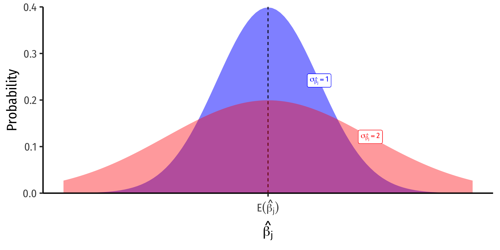
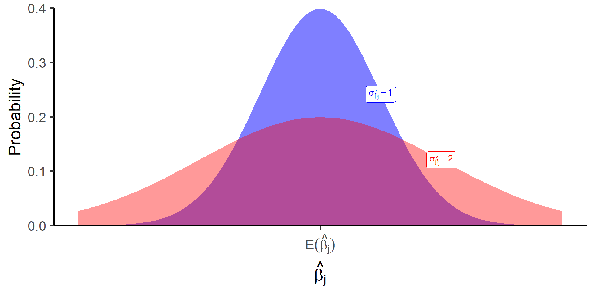
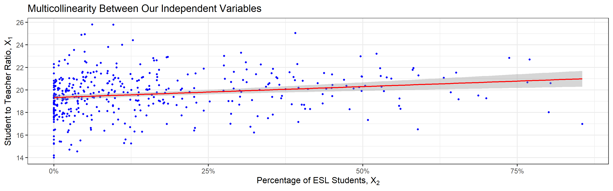
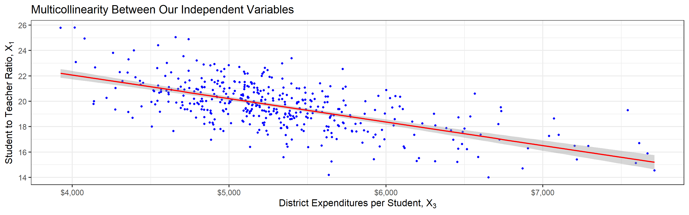
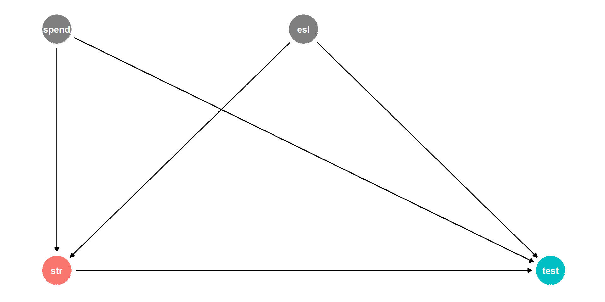
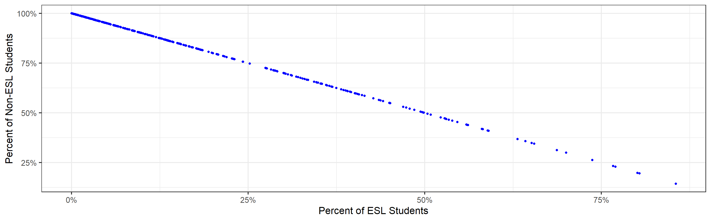
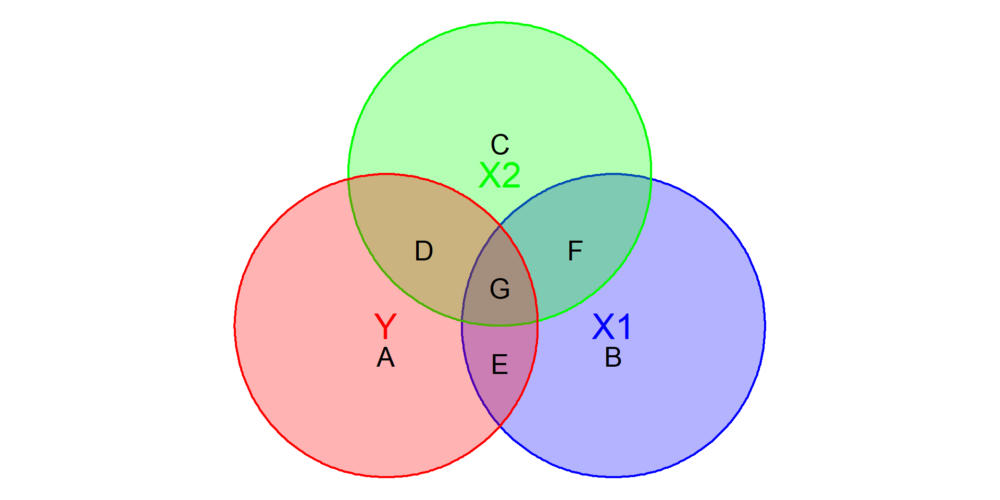
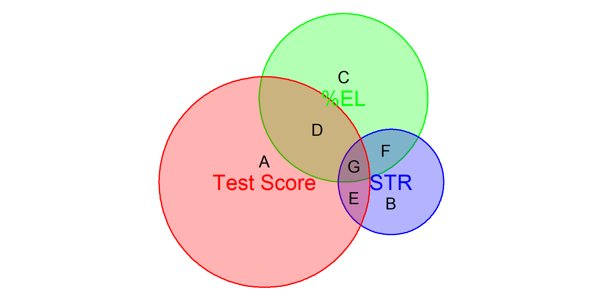

4.1 — Multivariate OLS Estimators
ECON 4470 • Econometrics
Jordan Izenwasser
Slides Adapated from Ryan Safner, PhD
Contents
The Multivariate OLS Estimators
The Expected Value of \(\hat{\beta}_j\): Bias
Precision of \(\hat{\beta_j}\)
The Multivariate OLS Estimators
The Multivariate OLS Estimators
\[Y_i=\beta_0+\beta_1X_{1i}+\beta_2X_{2i}+\cdots+\beta_kX_{ki}+u_i\]
- The ordinary least squares (OLS) estimators of the unknown population parameters \(\beta_0, \beta_1, \beta_2, \cdots, \beta_k\) solves:
\[\min_{\hat{\beta_0}, \hat{\beta_1}, \hat{\beta_2}, \cdots, \hat{\beta_k}} \sum^n_{i=1}\left[\underbrace{Y_i-\underbrace{(\hat{\beta_0}+\hat{\beta_1}X_{1i}+\hat{\beta_2}X_{2i}+\cdots+ \hat{\beta_k}X_{ki})}_{\color{gray}{\hat{Y}_i}}}_{\color{gray}{\hat{u}_i}}\right]^2\]
- Again, OLS estimators are chosen to minimize the sum of squared residuals (SSR)
- i.e. sum of squared “distances” between actual values of \(Y_i\) and predicted values \(\hat{Y_i}\)
The Multivariate OLS Estimators: FYI
Math FYI
in linear algebra terms, a regression model with \(n\) observations of \(k\) independent variables:
\[\mathbf{Y} = \mathbf{X \beta}+\mathbf{u}\] \[\underbrace{\begin{pmatrix} y_1\\ y_2\\ \vdots \\ y_n\\ \end{pmatrix}}_{\mathbf{Y}_{(n \times 1)}} = \underbrace{\begin{pmatrix} x_{1,1} & x_{1,2} & \cdots & x_{1,n}\\ x_{2,1} & x_{2,2} & \cdots & x_{2,n}\\ \vdots & \vdots & \ddots & \vdots\\ x_{k,1} & x_{k,2} & \cdots & x_{k,n}\\ \end{pmatrix}}_{\mathbf{X}_{(n \times k)}} \underbrace{\begin{pmatrix} \beta_1\\ \beta_2\\ \vdots \\ \beta_k \\ \end{pmatrix}}_{\mathbf{\beta}_{(k \times 1)}} + \underbrace{\begin{pmatrix} u_1\\ u_2\\ \vdots \\ u_n \\ \end{pmatrix}}_{\mathbf{u}_{(n \times 1)}}\]
The OLS estimator for \(\beta\) is \(\hat{\beta}=(\mathbf{X}'\mathbf{X})^{-1}\mathbf{X}'\mathbf{Y}\)
Appreciate that I am saving you from such sorrow
Note that we still have a function linear in the parameters
The Sampling Distribution of \(\hat{\beta_j}\)
- For any individual \(\beta_j\), it has a sampling distribution:
\[\hat{\beta_j} \sim N \left(E[\hat{\beta_j}], \;se(\hat{\beta_j})\right)\]
- We want to know its sampling distribution’s:
- Center: \(\color{#6A5ACD}{E[\hat{\beta_j}]}\); what is the expected value of our estimator?
- Spread: \(\color{#6A5ACD}{se(\hat{\beta_j})}\); how precise or uncertain is our estimator?
The Sampling Distribution of \(\hat{\beta_j}\)
- For any individual \(\beta_j\), it has a sampling distribution:
\[\hat{\beta_j} \sim N \left(E[\hat{\beta_j}], \;se(\hat{\beta_j})\right)\]
- We want to know its sampling distribution’s:
- Center: \(\color{#6A5ACD}{E[\hat{\beta_j}]}\); what is the expected value of our estimator?
- Spread: \(\color{#6A5ACD}{se(\hat{\beta_j})}\); how precise or uncertain is our estimator?

The Expected Value of \(\hat{\beta_j}\): Bias
Exogeneity and Unbiasedness
- As before, \(\mathbb{E}[\hat{\beta_j}]=\beta_j\) when \(X_j\) is exogenous (i.e. \(cor(X_j, u)=0\))
- We know the true \(\mathbb{E}[\hat{\beta_j}]=\beta_j+\underbrace{cor(X_j,u)\frac{\sigma_u}{\sigma_{X_j}}}_{\text{O.V. Bias}}\)
- If \(X_j\) is endogenous (i.e. \(cor(X_j, u)\neq 0\)), contains omitted variable bias
- Let’s “see” an example of omitted variable bias and quantify it with our example
Measuring Omitted Variable Bias I
- Suppose the true population model of a relationship is:
\[\color{#047806}{Y_i=\beta_0+\beta_1 X_{1i}+\beta_2 X_{2i}+u_i}\]
- What happens when we run a regression and omit \(X_{2i}\)?
- Suppose we estimate the following omitted regression of just \(Y_i\) on \(X_{1i}\) (omitting \(X_{2i})\):1
\[\color{#0047AB}{Y_i=\alpha_0+\alpha_1 X_{1i}+\nu_i}\]
Measuring Omitted Variable Bias II
- Key Question: are \(X_{1i}\) and \(X_{2i}\) correlated?
- Run an auxiliary regression of \(X_{2i}\) on \(X_{1i}\) to see:1
\[\color{#6A5ACD}{X_{2i}=\delta_0+\delta_1 X_{1i}+\tau_i}\]
If \(\color{#6A5ACD}{\delta_1}=0\), then \(X_{1i}\) and \(X_{2i}\) are not linearly related
If \(|\color{#6A5ACD}{\delta_1}|\) is very big, then \(X_{1i}\) and \(X_{2i}\) are strongly linearly related
Measuring Omitted Variable Bias III
- Now substitute our auxiliary regression between \(X_{2i}\) and \(X_{1i}\) into the true model:
- We know \(\color{#6A5ACD}{X_{2i}=\delta_0+\delta_1 X_{1i}+\tau_i}\)
\[\begin{align*} Y_i&=\beta_0+\beta_1 X_{1i}+\beta_2 \color{#6A5ACD}{X_{2i}}+u_i \\ \end{align*}\]
Measuring Omitted Variable Bias III
- Now substitute our auxiliary regression between \(X_{2i}\) and \(X_{1i}\) into the true model:
- We know \(\color{#6A5ACD}{X_{2i}=\delta_0+\delta_1 X_{1i}+\tau_i}\)
\[\begin{align*} Y_i&=\beta_0+\beta_1 X_{1i}+\beta_2 \color{#6A5ACD}{X_{2i}}+u_i \\ Y_i&=\beta_0+\beta_1 X_{1i}+\beta_2 \color{#6A5ACD}{\big(\delta_0+\delta_1 X_{1i}+\tau_i \big)}+u_i \\ \end{align*}\]
Measuring Omitted Variable Bias III
- Now substitute our auxiliary regression between \(X_{2i}\) and \(X_{1i}\) into the true model:
- We know \(\color{#6A5ACD}{X_{2i}=\delta_0+\delta_1 X_{1i}+\tau_i}\)
\[\begin{align*} Y_i&=\beta_0+\beta_1 X_{1i}+\beta_2 \color{#6A5ACD}{X_{2i}}+u_i \\ Y_i&=\beta_0+\beta_1 X_{1i}+\beta_2 \color{#6A5ACD}{\big(\delta_0+\delta_1 X_{1i}+\tau_i \big)}+u_i \\ Y_i&=(\beta_0+\beta_2 \color{#6A5ACD}{\delta_0})+(\beta_1+\beta_2 \color{#6A5ACD}{\delta_1})\color{#6A5ACD}{X_{1i}}+(\beta_2 \color{#6A5ACD}{\tau_i}+u_i)\\ \end{align*}\]
Measuring Omitted Variable Bias III
- Now substitute our auxiliary regression between \(X_{2i}\) and \(X_{1i}\) into the true model:
- We know \(\color{#6A5ACD}{X_{2i}=\delta_0+\delta_1 X_{1i}+\tau_i}\)
\[\begin{align*} Y_i&=\beta_0+\beta_1 X_{1i}+\beta_2 \color{#6A5ACD}{X_{2i}}+u_i \\ Y_i&=\beta_0+\beta_1 X_{1i}+\beta_2 \color{#6A5ACD}{\big(\delta_0+\delta_1 X_{1i}+\tau_i \big)}+u_i \\ Y_i&=(\underbrace{\beta_0+\beta_2 \color{#6A5ACD}{\delta_0}}_{\color{#0047AB}{\alpha_0}})+(\underbrace{\beta_1+\beta_2 \color{#6A5ACD}{\delta_1}}_{\color{#0047AB}{\alpha_1}})\color{#6A5ACD}{X_{1i}}+(\underbrace{\beta_2 \color{#6A5ACD}{\tau_i}+u_i}_{\color{#0047AB}{\nu_i}})\\ \end{align*}\]
- Now relabel each of the three terms as the OLS estimates \((\alpha\)’s) and error \((\nu_i)\) from the omitted regression, so we again have:
\[\color{#0047AB}{Y_i=\alpha_0+\alpha_1X_{1i}+\nu_i}\]
- Crucially, this means that our OLS estimate for \(X_{1i}\) in the omitted regression is: \[\color{#0047AB}{\alpha_1}=\beta_1+\beta_2 \color{#6A5ACD}{\delta_1}\]
Measuring Omitted Variable Bias IV
\[\color{#0047AB}{\alpha_1}=\color{#047806}{\beta_1}+\color{#D7250E}{\beta_2} \color{#6A5ACD}{\delta_1}\]
- The Omitted Regression OLS estimate for \(X_{1}\), \((\color{#0047AB}{\alpha_1})\) picks up both:
- The true effect of \(X_{1}\) on \(Y\): \(\beta_1\)
- The true effect of \(X_2\) on \(Y\): \(\beta_2\)…as pulled through the relationship between \(X_1\) and \(X_2\): \(\delta_1\)
- Recall our conditions for omitted variable bias from some variable \(\mathbf{Z_i}\):
- \(\mathbf{Z_i}\) must be a determinant of \(Y_i\) \(\implies\) \(\beta_2 \neq 0\)
- \(\mathbf{Z_i}\) must be correlated with \(X_i\) \(\implies\) \(\delta_1 \neq 0\)
- Otherwise, if \(Z_i\) does not fit these conditions, \(\alpha_1=\beta_1\) and the omitted regression is unbiased!
Measuring OVB in Our Class Size Example I
- The “True” Regression \((Y_i\) on \(X_{1i}\) and \(X_{2i})\)
\[\color{#047806}{\widehat{\text{Test Score}_i}=686.03-1.10\text{ STR}_i-0.65\text{ %EL}_i}\]
Measuring OVB in Our Class Size Example II
- The “Omitted” Regression \((Y_{i}\) on just \(X_{1i})\)
\[\color{#0047AB}{\widehat{\text{Test Score}_i}=698.93-2.28\text{ STR}_i}\]
Measuring OVB in Our Class Size Example III
- The “Auxiliary” Regression \((X_{2i}\) on \(X_{1i})\)
\[\color{#6A5ACD}{\widehat{\text{%EL}_i}=-19.85+1.81\text{ STR}_i}\]
Measuring OVB in Our Class Size Example IV
“True” Regression
\(\widehat{\text{Test Score}_i}=686.03-1.10\text{ STR}_i-0.65\text{ %EL}\)
“Omitted” Regression
\(\widehat{\text{Test Score}_i}=698.93\color{#0047AB}{-2.28}\text{ STR}_i\)
“Auxiliary” Regression
\(\widehat{\text{%EL}_i}=-19.85+1.81\text{ STR}_i\)
- Omitted Regression \(\alpha_1\) on STR is -2.28
Measuring OVB in Our Class Size Example IV
“True” Regression
\(\widehat{\text{Test Score}_i}=686.03 \color{#047806}{-1.10}\text{ STR}_i-0.65\text{ %EL}\)
“Omitted” Regression
\(\widehat{\text{Test Score}_i}=698.93\color{#0047AB}{-2.28}\text{ STR}_i\)
“Auxiliary” Regression
\(\widehat{\text{%EL}_i}=-19.85+1.81\text{ STR}_i\)
- Omitted Regression \(\alpha_1\) on STR is -2.28
\[\color{#0047AB}{\alpha_1}=\color{#047806}{\beta_1}+\color{#D7250E}{\beta_2} \color{#6A5ACD}{\delta_1}\]
- The true effect of STR on Test Score: -1.10
Measuring OVB in Our Class Size Example IV
“True” Regression
\(\widehat{\text{Test Score}_i}=686.03 \color{#047806}{-1.10}\text{ STR}_i\color{#D7250E}{-0.65}\text{ %EL}\)
“Omitted” Regression
\(\widehat{\text{Test Score}_i}=698.93\color{#0047AB}{-2.28}\text{ STR}_i\)
“Auxiliary” Regression
\(\widehat{\text{%EL}_i}=-19.85+1.81\text{ STR}_i\)
- Omitted Regression \(\alpha_1\) on STR is -2.28
\[\color{#0047AB}{\alpha_1}=\color{#047806}{\beta_1}+\color{#D7250E}{\beta_2} \color{#6A5ACD}{\delta_1}\]
The true effect of STR on Test Score: -1.10
The true effect of %EL on Test Score: -0.65
Measuring OVB in Our Class Size Example IV
“True” Regression
\(\widehat{\text{Test Score}_i}=686.03 \color{#047806}{-1.10}\text{ STR}_i\color{#D7250E}{-0.65}\text{ %EL}\)
“Omitted” Regression
\(\widehat{\text{Test Score}_i}=698.93\color{#0047AB}{-2.28}\text{ STR}_i\)
“Auxiliary” Regression
\(\widehat{\text{%EL}_i}=-19.85+\color{#6A5ACD}{1.81}\text{ STR}_i\)
- Omitted Regression \(\alpha_1\) on STR is -2.28
\[\color{#0047AB}{\alpha_1}=\color{#047806}{\beta_1}+\color{#D7250E}{\beta_2} \color{#6A5ACD}{\delta_1}\]
The true effect of STR on Test Score: -1.10
The true effect of %EL on Test Score: -0.65
The relationship between STR and %EL: 1.81
Measuring OVB in Our Class Size Example IV
“True” Regression
\(\widehat{\text{Test Score}_i}=686.03 \color{#047806}{-1.10}\text{ STR}_i\color{#D7250E}{-0.65}\text{ %EL}\)
“Omitted” Regression
\(\widehat{\text{Test Score}_i}=698.93\color{#0047AB}{-2.28}\text{ STR}_i\)
“Auxiliary” Regression
\(\widehat{\text{%EL}_i}=-19.85+\color{#6A5ACD}{1.81}\text{ STR}_i\)
- Omitted Regression \(\alpha_1\) on STR is -2.28
\[\color{#0047AB}{\alpha_1}=\color{#047806}{\beta_1}+\color{#D7250E}{\beta_2} \color{#6A5ACD}{\delta_1}\]
The true effect of STR on Test Score: -1.10
The true effect of %EL on Test Score: -0.65
The relationship between STR and %EL: 1.81
So, for the omitted regression:
\[\color{#0047AB}{-2.28}=\color{#047806}{-1.10}+\color{#D7250E}{(-0.65)} \color{#6A5ACD}{(1.81)}\]
Measuring OVB in Our Class Size Example IV
“True” Regression
\(\widehat{\text{Test Score}_i}=686.03 \color{#047806}{-1.10}\text{ STR}_i\color{#D7250E}{-0.65}\text{ %EL}\)
“Omitted” Regression
\(\widehat{\text{Test Score}_i}=698.93\color{#0047AB}{-2.28}\text{ STR}_i\)
“Auxiliary” Regression
\(\widehat{\text{%EL}_i}=-19.85+\color{#6A5ACD}{1.81}\text{ STR}_i\)
- Omitted Regression \(\alpha_1\) on STR is -2.28
\[\color{#0047AB}{\alpha_1}=\color{#047806}{\beta_1}+\color{#D7250E}{\beta_2} \color{#6A5ACD}{\delta_1}\]
The true effect of STR on Test Score: -1.10
The true effect of %EL on Test Score: -0.65
The relationship between STR and %EL: 1.81
So, for the omitted regression:
\[\color{#0047AB}{-2.28}=\color{#047806}{-1.10}+\underbrace{\color{#D7250E}{(-0.65)} \color{#6A5ACD}{(1.81)}}_{O.V.Bias=\mathbf{-1.18}}\]
Precision of \(\hat{\beta_j}\)
Precision of \(\hat{\beta_j}\) I
\(\sigma_{\hat{\beta_j}}\); how precise or uncertain are our estimates?
Variance \(\sigma^2_{\hat{\beta_j}}\) or standard error \(\sigma_{\hat{\beta_j}}\)

Precision of \(\hat{\beta_j}\) II
\[var(\hat{\beta_j})=\underbrace{\color{#6A5ACD}{\frac{1}{1-R^2_j}}}_{\color{#6A5ACD}{VIF}} \times \frac{(SER)^2}{n \times var(X)}\]
\[se(\hat{\beta_j})=\sqrt{var(\hat{\beta_j})}\]
- Variation in \(\hat{\beta_j}\) is affected by four things now:
- Goodness of fit of the model (SER)
- Larger \(SER\) \(\rightarrow\) larger \(var(\hat{\beta_j})\)
- Sample size, n
- Larger \(n\) \(\rightarrow\) smaller \(var(\hat{\beta_j})\)
- Variance of X
- Larger \(var(X)\) \(\rightarrow\) smaller \(var(\hat{\beta_j})\)
- Variance Inflation Factor \(\color{#6A5ACD}{\frac{1}{(1-R^2_j)}}\)
- Larger \(VIF\), larger \(var(\hat{\beta_j})\)
- This is the only new effect
VIF and Multicollinearity I
- Two independent (X) variables are multicollinear:
\[cor(X_j, X_l) \neq 0 \quad \forall j \neq l\]
- Multicollinearity between X variables does not bias OLS estimates
- Remember, we pulled another variable out of \(u\) into the regression
- If it were omitted, then it would cause omitted variable bias!
- Multicollinearity does increase the variance of each OLS estimator by
\[VIF=\frac{1}{(1-R^2_j)}\]
VIF and Multicollinearity II
\[VIF=\frac{1}{(1-R^2_j)}\]
- \(R^2_j\) is the \(R^2\) from an auxiliary regression of \(X_j\) on all other regressors \((X\)’s)
- i.e. proportion of \(var(X_j)\) explained by other \(X\)’s
VIF and Multicollinearity III
Example
Suppose we have a regression with three regressors \((k=3)\):
\[Y_i=\beta_0+\beta_1X_{1i}+\beta_2X_{2i}+\beta_3X_{3i}+u_i\]
- There will be three different \(R^2_j\)’s, one for each regressor:
\[\begin{align*} R^2_1 \text{ for } X_{1i}&=\gamma+\gamma X_{2i} + \gamma X_{3i} \\ R^2_2 \text{ for } X_{2i}&=\zeta_0+\zeta_1 X_{1i} + \zeta_2 X_{3i} \\ R^2_3 \text{ for } X_{3i}&=\eta_0+\eta_1 X_{1i} + \eta_2 X_{2i} \\ \end{align*}\]
VIF and Multicollinearity IV
\[VIF=\frac{1}{(1-R^2_j)}\]
\(R^2_j\) is the \(R^2\) from an auxiliary regression of \(X_j\) on all other regressors \((X\)’s)
- i.e. proportion of \(var(X_j)\) explained by other \(X\)’s
The \(R_j^2\) tells us how much other regressors explain regressor \(X_j\)
Key Takeaway: If other \(X\) variables explain \(X_j\) well (high \(R^2_J\)), it will be harder to tell how cleanly \(X_j \rightarrow Y_i\), and so \(var(\hat{\beta_j})\) will be higher
VIF and Multicollinearity V
- Common to calculate the Variance Inflation Factor (VIF) for each regressor:
\[VIF=\frac{1}{(1-R^2_j)}\]
- VIF quantifies the factor (scalar) by which \(var(\hat{\beta_j})\) increases because of multicollinearity
- e.g. VIF of 2, 3, etc. \(\implies\) variance increases by 2x, 3x, etc.
- Baseline: \(R^2_j=0\) \(\implies\) no multicollinearity \(\implies VIF = 1\) (no inflation)
- Larger \(R^2_j\) \(\implies\) larger VIF
- Rule of thumb: \(VIF>10\) is problematic
VIF and Multicollinearity in Our Example I
- Higher \(\%EL\) predicts higher \(STR\)
- Hard to get a precise marginal effect of \(STR\) holding \(\%EL\) constant
- Don’t have much data on districts with low STR and high \(\%EL\) (and vice versa)!
VIF and Multicollinearity in Our Example II
- Again, consider the correlation between the variables
str testscr el_pct
str 1.0000000 -0.2263628 0.1876424
testscr -0.2263628 1.0000000 -0.6441237
el_pct 0.1876424 -0.6441237 1.0000000- \(cor(STR, \%EL) = -0.644\)
VIF and Multicollinearity in R I
str el_pct
1.036495 1.036495 - \(var(\hat{\beta_1})\) on
strincreases by 1.036 times (3.6%) due to multicollinearity withel_pct - \(var(\hat{\beta_2})\) on
el_pctincreases by 1.036 times (3.6%) due to multicollinearity withstr
VIF and Multicollinearity in R II
- Let’s calculate VIF manually to see where it comes from:
VIF and Multicollinearity in R III
VIF and Multicollinearity in R IV
[1] 1.036495- Again, multicollinearity between the two \(X\) variables inflates the variance on each by 1.036 times
Another Example: Expenditures/Student I
Example
What about district expenditures per student?
Another Example: Expenditures/Student II
- Higher \(spend\) predicts lower \(STR\)
- Hard to get a precise marginal effect of \(STR\) holding \(spend\) constant
- Don’t have much data on districts with high STR and high \(spend\) (and vice versa)!
Another Example: Expenditures/Student II
Would omitting Expenditures per student cause omitted variable bias?
\(cor(Test, spend) \neq 0\)
\(cor(STR, spend) \neq 0\)

Another Example: Expenditures/Student III
- Including
expn_stureduces bias but increases variance of \(\beta_1\) by 1.68x (68%)- and variance of \(\beta_2\) by 1.04x (4%)
Perfect Multicollinearity
- Perfect multicollinearity is when a regressor is an exact linear function of (an)other regressor(s)
\[\widehat{Sales} = \hat{\beta_0}+\hat{\beta_1}\text{Temperature (C)} + \hat{\beta_2}\text{Temperature (F)}\]
\[\text{Temperature (F)}=32+1.8*\text{Temperature (C)}\]
- \(cor(\text{temperature (F), temperature (C)})=1\)
- \(R^2_j=1 \rightarrow VIF=\frac{1}{1-1} \rightarrow var(\hat{\beta_j})=0\)!
- This is fatal for a regression
- A logical impossiblity, always caused by human error
Perfect Multicollinearity: Example
Example
\[\widehat{TestScore_i} = \hat{\beta_0}+\hat{\beta_1}STR_i +\hat{\beta_2}\%EL+\hat{\beta_3}\%EF\]
\(\%EL\): the percentage of students learning English
\(\%EF\): the percentage of students fluent in English
\(\%EF=100-\%EL\)
\(|cor(\%EF, \%EL)|=1\)
Perfect Multicollinearity: Example II
Perfect Multicollinearity: Example III
Perfect Multicollinearity Example IV
Call:
lm(formula = testscr ~ str + el_pct + ef_pct, data = ca_school_ex)
Residuals:
Min 1Q Median 3Q Max
-48.845 -10.240 -0.308 9.815 43.461
Coefficients: (1 not defined because of singularities)
Estimate Std. Error t value Pr(>|t|)
(Intercept) 686.03225 7.41131 92.566 < 2e-16 ***
str -1.10130 0.38028 -2.896 0.00398 **
el_pct -0.64978 0.03934 -16.516 < 2e-16 ***
ef_pct NA NA NA NA
---
Signif. codes: 0 '***' 0.001 '**' 0.01 '*' 0.05 '.' 0.1 ' ' 1
Residual standard error: 14.46 on 417 degrees of freedom
Multiple R-squared: 0.4264, Adjusted R-squared: 0.4237
F-statistic: 155 on 2 and 417 DF, p-value: < 2.2e-16- Note
Rdrops one of the multicollinear regressors (ef_pct) if you include both
A Summary of Multivariate OLS Estimator Properties
A Summary of Multivariate OLS Estimator Properties
- \(\hat{\beta_j}\) on \(X_j\) is biased only if there is an omitted variable \((Z)\) such that:
- \(cor(Y,Z)\neq 0\)
- \(cor(X_j,Z)\neq 0\)
- If \(Z\) is included and \(X_j\) is collinear with \(Z\), this does not cause a bias
- \(var[\hat{\beta_j}]\) and \(se[\hat{\beta_j}]\) measure precision (or uncertainty) of estimate:
\[var[\hat{\beta_j}]=\frac{1}{(1-R^2_j)}*\frac{SER^2}{n \times var[X_j]}\]
- VIF from multicollinearity: \(\frac{1}{(1-R^2_j)}\)
- \(R_j^2\) for auxiliary regression of \(X_j\) on all other \(X\)’s
- mutlicollinearity does not bias \(\hat{\beta_j}\) but raises its variance
- perfect multicollinearity if \(X\)’s are linear function of others
(Updated) Measures of Fit
(Updated) Measures of Fit
Again, how well does a linear model fit the data?
How much variation in \(Y_i\) is “explained” by variation in the model \((\hat{Y_i})\)?
\[\begin{align*} Y_i&=\hat{Y_i}+\hat{u_i}\\ \hat{u_i}&= Y_i-\hat{Y_i}\\ \end{align*}\]
(Updated) Measures of Fit: SER
- Again, the Standard errror of the regression (SER) estimates the standard error of \(u\)
\[SER=\frac{SSR}{n-\mathbf{k}-1}\]
A measure of the spread of the observations around the regression line (in units of \(Y\)), the average “size” of the residual
Only new change: divided by \(n-\color{#6A5ACD}{k}-1\) due to use of \(k+1\) degrees of freedom to first estimate \(\beta_0\) and then all of the other \(\beta\)’s for the \(k\) number of regressors1
(Updated) Measures of Fit: \(R^2\)
\[\begin{align*} R^2&=\frac{SSM}{SST}\\ &=1-\frac{SSR}{SST}\\ &=(r_{X,Y})^2 \\ \end{align*}\]
- Again, \(R^2\) is fraction of total variation in \(Y_i\) (“total sum of squares”) that is explained by variation in predicted values \((\hat{Y_i})\), i.e. our model (“model sum of squares”)
\[R^2 = \frac{var(\hat{Y})}{var(Y)}\]
Visualizing \(R^2\)
- Total Variation in Y: Areas A + D + E + G
\[SST = \sum^n_{i=1}(Y_i-\bar{Y})^2\]
- Variation in Y explained by X1 and X2: Areas D + E + G
\[SSM = \sum^n_{i=1}(\hat{Y_i}-\bar{Y})^2\]
- Unexplained variation in Y: Area A \[SSR = \sum^n_{i=1}(\hat{u_i})^2\]
\[R^2 = \frac{SSM}{SST} = \frac{D+E+G}{\color{red}{A}+D+E+G}\]

Visualizing \(R^2\)
# make a function to calc. sum of sq. devs
sum_sq <- function(x){sum((x - mean(x))^2)}
# find total sum of squares
SST <- elreg %>%
augment() %>%
summarize(SST = sum_sq(testscr))
# find explained sum of squares
SSM <- elreg %>%
augment() %>%
summarize(SSM = sum_sq(.fitted))
# look at them and divide to get R^2
tribble(
~SSM, ~SST, ~R_sq,
SSM, SST, SSM/SST
) %>%
knitr::kable()| SSM | SST | R_sq |
|---|---|---|
| 64864.3 | 152109.6 | 0.4264314 |
\[R^2 = \frac{SSM}{SST} = \frac{D+E+G}{\color{red}{A}+D+E+G}\]

(Updated) Measures of Fit: Adjusted \(\bar{R}^2\)
- Problem: \(R^2\) mechanically increases every time a new variable is added (it reduces SSR!)
- Think in the diagram: more area of \(Y\) covered by more \(X\) variables!
- This does not mean adding a variable improves the fit of the model per se, \(R^2\) gets inflated
- We correct for this effect with the adjusted \(\bar{R}^2\) which penalizes adding new variables:
\[\bar{R}^2 = 1- \underbrace{\frac{n-1}{n-k-1}}_{penalty} \times \frac{SSR}{SST}\] - In the end, recall \(R^2\) was never that useful1, so don’t worry about the formula - Large sample sizes \((n)\) make \(R^2\) and \(\bar{R}^2\) very close
\(\bar{R}^2\) In R
Call:
lm(formula = testscr ~ str + el_pct, data = ca_school)
Residuals:
Min 1Q Median 3Q Max
-48.845 -10.240 -0.308 9.815 43.461
Coefficients:
Estimate Std. Error t value Pr(>|t|)
(Intercept) 686.03225 7.41131 92.566 < 2e-16 ***
str -1.10130 0.38028 -2.896 0.00398 **
el_pct -0.64978 0.03934 -16.516 < 2e-16 ***
---
Signif. codes: 0 '***' 0.001 '**' 0.01 '*' 0.05 '.' 0.1 ' ' 1
Residual standard error: 14.46 on 417 degrees of freedom
Multiple R-squared: 0.4264, Adjusted R-squared: 0.4237
F-statistic: 155 on 2 and 417 DF, p-value: < 2.2e-16- Base \(R^2\) (
Rcalls it “Multiple R-squared”) went up Adjusted R-squared\((\bar{R}^2)\) went down